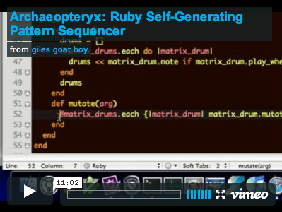

Learn about some awesome new computer science classes I have been developing:
My goal is to ensure our CS graduates understand the entire abstraction stack of computing and to expose them to the best software development tools and modern paradigms. By instilling in them a strong sense of creativity, I hope to empower them to become better software developers, to feel a passion for programming, and to use their skills to create (rather than consume) better software & systems.
My wacky, personal research focuses on the impact of computing systems on the individual and on society; information architecture, the "semantic Web" and content-centric ecosystems; and the art & practice of postmodern software development.
Programming as a Passion (not really about Archaeopteryx)

303 384 2468
#!/usr/bin/env ruby
def email
"#{first_initial}#{last_name}@mines.edu"
end
Tues & Thurs from 12 - 1PM & 3 - 4PM
Tues & Thurs from 9AM - 4PM
This site contains materials for courses taught by Yong Bakos at the Colorado School of Mines.
© Yong Joseph Bakos. All rights reserved.